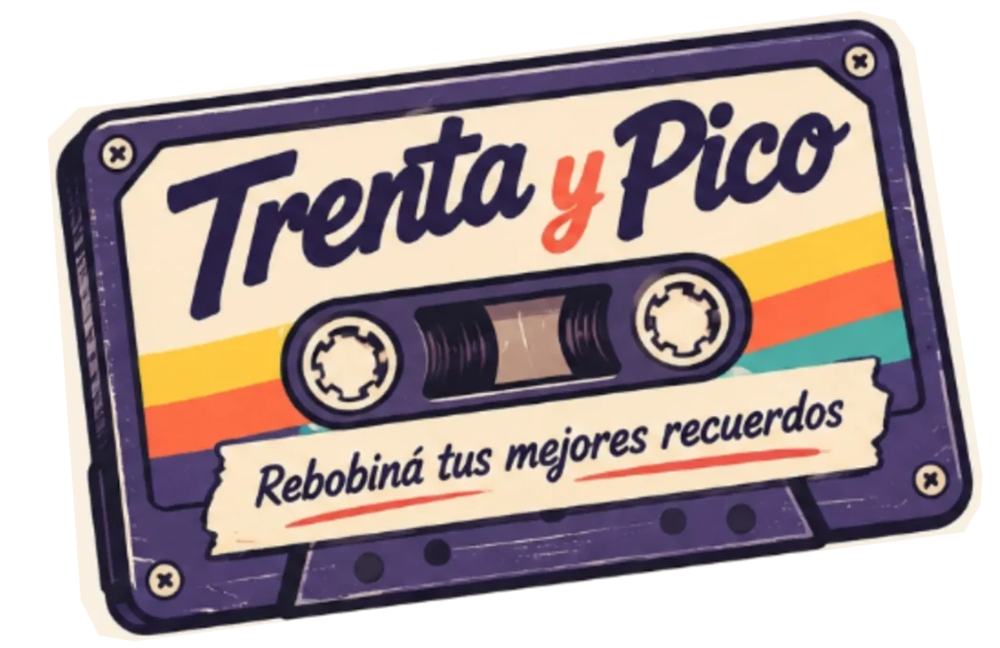

Nuestra infancia
Cuando todo era una aventura
Dibujitos después del colegio, tardes jugando afuera, figuritas y videojuegos.
REC 1990 — 2005
La música, los momentos y las pequeñas cosas que hicieron inolvidables los años 90 y 2000.

SIDE A · GRANDES RECUERDOS
«Hay canciones que no escuchamos hace años, pero todavía sabemos de memoria».
SIDE B / NUESTRA HISTORIA
¿Te acordás de grabar canciones de la radio, esperar tu programa favorito en la tele o pasar horas eligiendo una película en el videoclub?
TrentaYPico nació para volver a escuchar nuestra música y recordar esas pequeñas cosas que compartimos sin darnos cuenta de que algún día serían historia.
Nuestra infancia
Dibujitos después del colegio, tardes jugando afuera, figuritas y videojuegos.
Nuestra música
Canciones grabadas de la radio, compilados caseros y temas que reconocés con los primeros acordes.
Nuestra tecnología
El teléfono fijo, los disquetes, los primeros celulares y el módem que hacía ruido.
Nuestros recuerdos
Recreos, cumpleaños, viajes familiares y pequeñas costumbres que marcaron nuestra historia.
«Cambiaron los tiempos, pero hay recuerdos que siguen intactos».
TRACK 01 / LA ROCKOLA
Hay canciones que nos devuelven a un lugar, una persona o un momento especial. Elegí tu época, subí el volumen y dejá que los recuerdos hagan el resto.
Elegí una playlist para cargar el reproductor.
El rock que marcó nuestra historia.
Cuando llegaba el momento de bailar.
Los temas que sonaban en todos lados.
Es imposible no saberse el estribillo.
«Algunas canciones son verdaderas máquinas del tiempo».
BONUS TRACK / GRACIAS POR ESTAR
TrentaYPico es un proyecto independiente sin fines de lucro. Se sostiene con donaciones voluntarias de quienes disfrutan este espacio.
Compartir la página también es una gran ayuda.
♡ Bancá a TrentaYPico